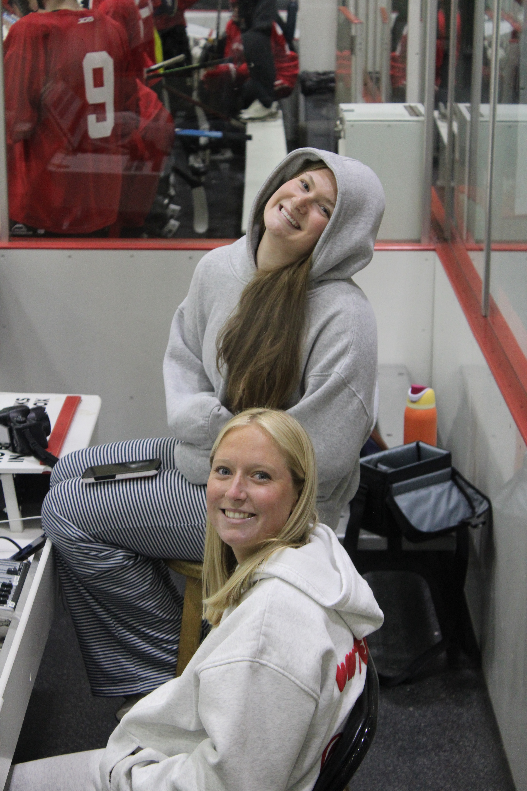

Behind the Lens
Capturing fast-paced collegiate athletics, student media stories, and timeless portraits across Oxford and Cincinnati, Ohio.

4+ Years
Of Dedicated Photography Experience
Hi, I'm Lauren Auriana.
I am a junior at Miami University, originally from Cincinnati, Ohio. Over the last four years, I have turned my passion for visual storytelling into an active sports and editorial photography practice.
While I am open to all types of photography—including senior graduation portraits, couples, lifestyle, and events—my primary focus and expertise lie in sports photography. There is nothing quite like freezing high-energy game moments and capturing raw athletic emotion in real time.
My editorial foundation was built working with The Miami Student, Miami University's award-winning student newspaper, where I covered campus news, feature stories, and athletic events. Currently, I work closely with the Miami University Club Men's Hockey team, capturing rink-side action, team dynamics, and game-day highlights.
Browse Sample Photo Archive on Google Drive →Experience & Media Work
Key organizations and coverage roles that have shaped my photography style.
Club Men's Hockey
Official Team PhotographerDocumenting fast-paced rink action, game highlights, bench reactions, and player portraits for team media and social channels.
The Miami Student
Award-Winning Newspaper StaffProvided photojournalism coverage for campus events, student life features, and intercollegiate sports for Miami's primary student publication.
Portraits & Campus Life
Freelance PhotographerPhotographing senior graduation sessions across Miami University's iconic red-brick campus.
Photography Specialties
Overview of my key shooting styles, gear setup capabilities, and ideal assignments.
| Specialty Area | Primary Focus | Deliverables | Availability |
|---|---|---|---|
| Sports & Athletics | Ice Hockey, Campus Sports, Fast-Action Coverage | High-Speed Action Shots, Game Highlights, Roster Photos | Oxford & Cincinnati Region |
| Editorial & News | Student Journalism, Live Events, Press Releases | Web & Print-Ready Photojournalism Archives | On-Demand / Assignment Basis |
| Graduation & Seniors | Miami Univ. Campus Spots (Upham Arch, Seal, etc.) | High-Res Retouched Digital Gallery | Fall & Spring Seasons |
| Portraits & Lifestyle | Headshots, Personal Branding, Couples | Creative Outdoor & Natural Light Sessions | Year-Round |